Sommaire
Lycée Taiarapu Nui
Terminale Générale
Terminale Générale
Spécialité Physique – Chimie
2020-2021
2020-2021
Utiliser un tableur et obtenir l'équation d'une droite
Énoncé :
On mesure la largeur $\ell$ de la tâche centrale d'une figure de diffraction obtenue
en faisant passer un faisceau laser sur un fil de diamètre $a$.
On dispose de plusieurs fils de diamètres différents (en $\mu m$) : 40, 60, 80, 100, 120.
On montre que $\theta = \dfrac{\ell}{2D}$, avec $D=1,80\ m$.
On dispose de plusieurs fils de diamètres différents (en $\mu m$) : 40, 60, 80, 100, 120.
On montre que $\theta = \dfrac{\ell}{2D}$, avec $D=1,80\ m$.
1) À l'aide d'un tableur, créer le tableau ci-dessous :
| $a(\mu m)$ | $a(m)$ | $1/a$ $(m^{-1})$ | $\ell (cm)$ | $\theta$ |
| 40 | 5,7 | |||
| 60 | 3,8 | |||
| 80 | 2,8 | |||
| 100 | 2,3 | |||
| 120 | 1,9 |
2) Tracer $\theta = f(\dfrac{1}{a})$
3) Déterminer l'équation de la droite.
La colonne $a(\mu m)$ :
○ Pour aller plus vite : rentrer les deux premières valeurs (40 et 60) puis les selectionner.○ Un cadre apparait avec un "petit carré" un bas à droite du cadre de sélection.
○ Cliquer le "petit carré" et étirer jusqu'à la valeur 120.
(Puisque l'écart entre les 2 cellules est de 20, les cellules créés auront un écart de 20)
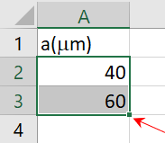
"petit carré".
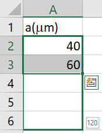
Étirer jusqu'à 120.
La colonne $a(m)$ :
À côté, remplir une colonne pour $a$ exprimer en $m$ :○ Dans la 1ère cellule, remplir avec : = A2*1e-6
(Il ne faut pas écrire "A2" mais cliquer sur la cellule A2)
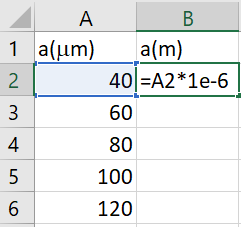
Remplir la formule avec le signe égale "="
○ Ensuite étirer le cadre comme précédemment (en cliquant le "petit carré") :
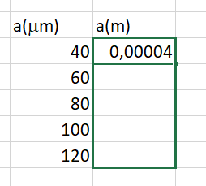
Étirer le "petit carré"...
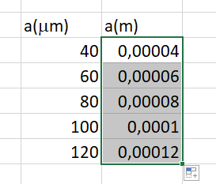
....puis relacher.
La colonne $1/a$ $(m^{-1})$ :
○ Dans la 1ère cellule, remplir avec : = 1/B2(Cliquer sur la cellule B12 !)
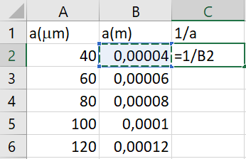
Cliquer sur la cellule B12.
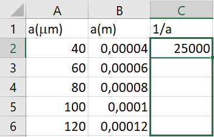
Étirer le "petit carré"
La colonne $\ell (cm)$ :
○ Remplir avec les valeurs mesurées.
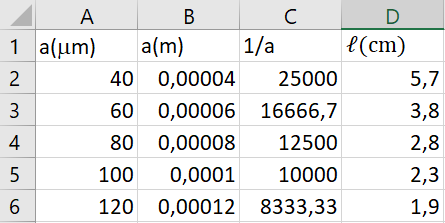
Remplir la colonne $\ell$.
Cellule $D(m)$ :
(Laisser de la place pour la colonne $\theta$○ Remplir une cellule avec la valeur de D.
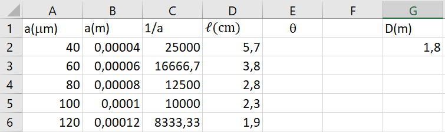
Valeur de $D$.
Colonne $\theta$ :
○ Dans la 1ère cellule, remplir avec : = D2*1e-2/(2*\$G\$2)(le symbole "\$" permet de fixer la valeur dans une formule)
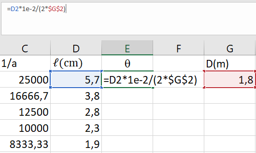
Colonne $\theta$ et utilisation du "\$".
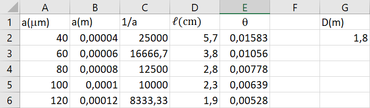
Tableau final.
Selectionner les données pour le graphique :
○ Sélectionner d'abord les valeurs de $1/a$ puis en maintenant la touche CTRL, sélectionner les valeurs de $\theta$.
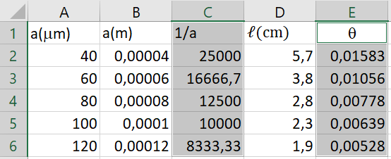
Sélection des données.
Inserer le graphique :
○ Insérer un graphique en choisissant le "nuage de points".
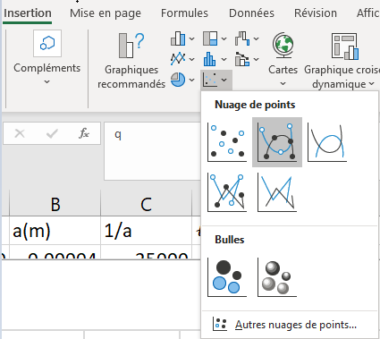
Sélection des données.
○ Faire un clic droit sur la courbe et choisir : "ajouter une courbe de tendance"
○ Dans les options, choisir : linéaire.
○ Cocher la case "définir l'interception" et définir la valeur à 0.0
○ Cocher la cases "Afficher l'équation sur le graphique"
○ Cocher la case "Afficher le coefficient de détermination (R²)sur le graphique"
○ Dans les options, choisir : linéaire.
○ Cocher la case "définir l'interception" et définir la valeur à 0.0
○ Cocher la cases "Afficher l'équation sur le graphique"
○ Cocher la case "Afficher le coefficient de détermination (R²)sur le graphique"
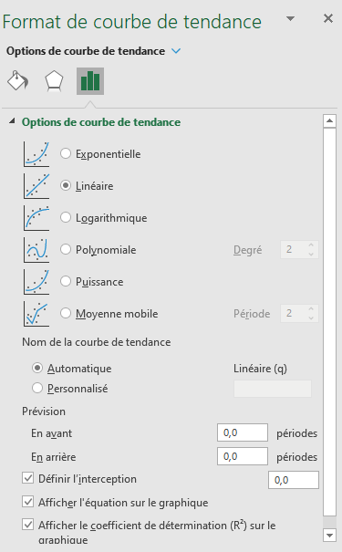
Options de la courbe de tendance.
○ Arranger la graphique (titre, nom des axes, etc.)
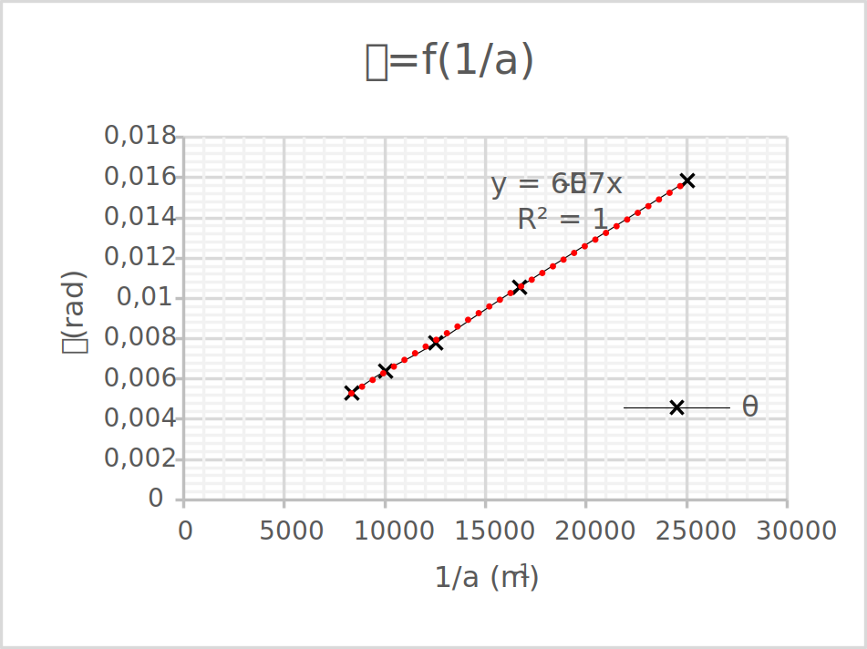
Graphique.